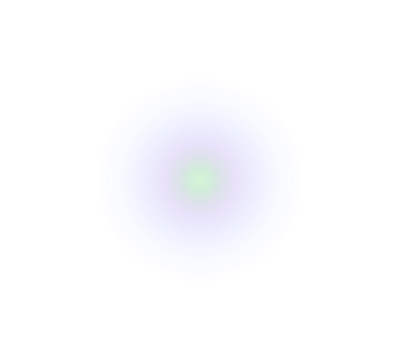

Living music that adapts to you
Full Presentation · May 2026
Kálma creates music that's alive. Every sound is generated in real-time — no recordings, no loops, no playlists.
The music is born fresh every time you open it, and it never plays the same thing twice.
The home base — everything lives here
Adaptive music for everyone. Daily use.
Therapeutic sound for mind & body
5 custom instruments to play with
Full technical docs & diagrams
All sounds & files, filterable
Music that changes with your world
Opens → senses your environment → starts playing
The music gently shifts as your world changes — no sudden jumps, just slow natural transformation
Warm, reflective drone bed in stereo (±0.35 pan)
Debussy-inspired, chord-aware (65% chord tones), calm 45–60 BPM
Walk → warm pads fade in. With Adaptive Beats enabled, dreamy beats join. Stop → they dissolve
Compressor, warmth + air EQ, 4.5s stereo reverb
4 types: Upbeat, Grounded, Dreamy, Energetic. Off by default
Type anything → LLM + Music Brain reshape the sound
Sacred geometry visualizer · Mood-driven color palettes · Like/dislike learning
Type how you feel — "floating in space", "rainy afternoon" — and the music reshapes itself using AI
Like/dislike teaches it your taste. Over time, it remembers what you prefer and adjusts
If AI isn't available, 200+ built-in emotion patterns take over instantly — seamless fallback
Therapeutic sound for your mind and body
Wellness isn't just recovery — it's prevention. Reading and Work Focus keep you calm and focused before burnout happens. That's therapeutic too.
Each intention automatically activates the right healing layers
| Intention | Activates | Why It Works |
|---|---|---|
| Sleep | Binaural beats · Delta frequency | Deep sleep brainwave range |
| Meditate | Tibetan singing bowls · Theta | Shown to reduce anxiety |
| Work Focus | Isochronic tones · Beta | Concentration sweet spot |
| Creative | Binaural beats · Theta | Associated with creative insight |
| Pain Relief | Binaural beats · Delta | Body relaxation response |
| Unwind | Ocean waves · Alpha | Stress reduction |
| Reading | Isochronic tones · Alpha | Sustained focus without headphones |
| Uplift | Wind chimes · Alpha | Bright, uplifting tonal texture |
Ambient generative music. Look inward. No voice — just you and the sound.
Voice-guided journey from Root to Crown. Custom recorded audio. 10 minutes.
Gentle ambient music for reflecting on what's good.
Chakra Tuning is the first voice-guided session — included to prove the concept. Future: more sessions, and exploring AI-generated voice guided meditation in real time based on mood or prompts.
All customizable from the player at any time
AI wellness music market
| Platform | Approach | Limitation |
|---|---|---|
| Endel | Algorithmic, button presets | You pick a mode — it doesn't truly adapt |
| Brain.fm | Pre-composed tracks | Real recordings on repeat — not generative |
| Kálma | Generated live in real-time | Adapts to environment + learns from you |
Nobody else does all three: generates everything live, adapts to your environment, and learns from you
No app store, no installation. Opens in any modern browser.
All music created from scratch — no sound files playing back
Free weather data for environmental sensing
Natural language mood interpretation via AI
Designed for phones — works everywhere
Pure code, no frameworks — lean and fast
Faster, smoother, always in your pocket
Music keeps going when you switch apps or lock your screen
Daily push notifications to check in with yourself
Your personalized soundscapes, no internet needed
Future development
Kálma becomes a living musical entity
It remembers. It learns. It grows.
Remembers your history — what helped, what didn't, what time you usually check in
Over time it becomes something unique to you. Not an assistant. Not a playlist. A presence.
Kálma is the first AI you don't just talk to — you feel it.
It responds with language and music as one.
A companion that meets you where you are, every day.
kálma